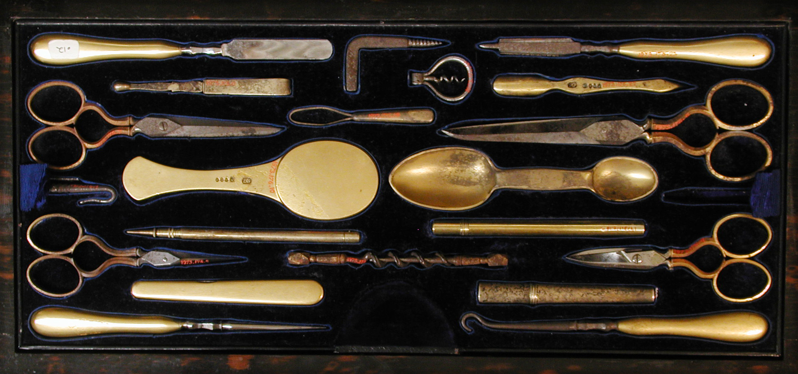

Hår, skjegg og ro.
En liten salong i Klostergaten, med tid nok til å gjøre det skikkelig.
Book time eller ring 55 30 18 42
Tir–fre 9–18 · lør 9–15
Hva det koster
| Klipp | |
|---|---|
| 550 kr | |
| 380 kr | |
| 430 kr | |
| 330 kr | |
| 430 kr | |
| 820 kr | |
| 520 kr | |
| 720 kr | |
| Skjegg | |
| 380 kr | |
| 480 kr | |
| 420 kr | |
| 260 kr | |
| Det lille | |
| 180 kr | |
| 160 kr | |
| 240 kr | |

Hei
Jeg heter Idar, og jeg har stått bak stolen her siden 2014. Det er ikke så mye mer å fortelle: jeg klipper hår, jeg tar skjegg, og jeg liker å ta meg tid til det.
Salongen er liten med vilje. Én kunde om gangen, ingen musikk som må ropes over, og plass til å sitte ned før vi begynner. Kommer du rett fra jobb, eller kommer du på en lørdag og ser ut av vinduet mens jeg holder på, går det like greit.

Jeg lærte faget i Oslo og flyttet tilbake hit fordi jeg ville klippe folk jeg møter på gaten. Klostergaten er rolig, og det passer salongen godt.
Har du et bilde med deg, eller bare en vag idé om hva du vil ha, tar vi det derfra. Det er sjelden verre enn det høres ut.
Idar Vågebarber og eier
Det folk spør om
Må jeg bestille time? Ja, helst. Ring 55 30 18 42 eller send en e-post. Drop-in går som regel bra på formiddagen, men ikke regn med plass på en lørdag.
Hvor lang tid tar det? En vanlig klipp tar 35 til 40 minutter. Skal skjegget også tas, setter jeg av en time.
Klipper du langt hår? Ja. Langt hår tar jeg like gjerne som kort, men sett av 50 minutter.
Tar du barn? Ja, fra tre år. Barna får sitte på en pute, og jeg klipper så fort de orker å sitte stille.
Kan jeg betale med kort? Ja, kort og Vipps. Kontant går også, men jeg har sjelden veksel.
Hvor kan jeg parkere? Klostergaten har beboerparkering, så det er ikke plass til gjester i gaten. Nærmeste parkeringskjeller ligger i Haugeveien, og bybanen stopper ved Byparken, åtte minutter unna.
Hva om jeg må avbestille? Si fra senest tre timer før, så gir jeg timen videre. Kommer du ikke, tar jeg betalt for halve timen neste gang.
Hvor lenge har salongen holdt på? Jeg åpnet i Klostergaten i 2014. Før det jobbet jeg ni år i Oslo, og før det var jeg lærling i Nygårdsgaten.
Kommer jeg inn med rullestol? Inngangen er i plan med gaten. Det er én trapp ned til salongen, så jeg møter deg ute og hjelper deg inn.